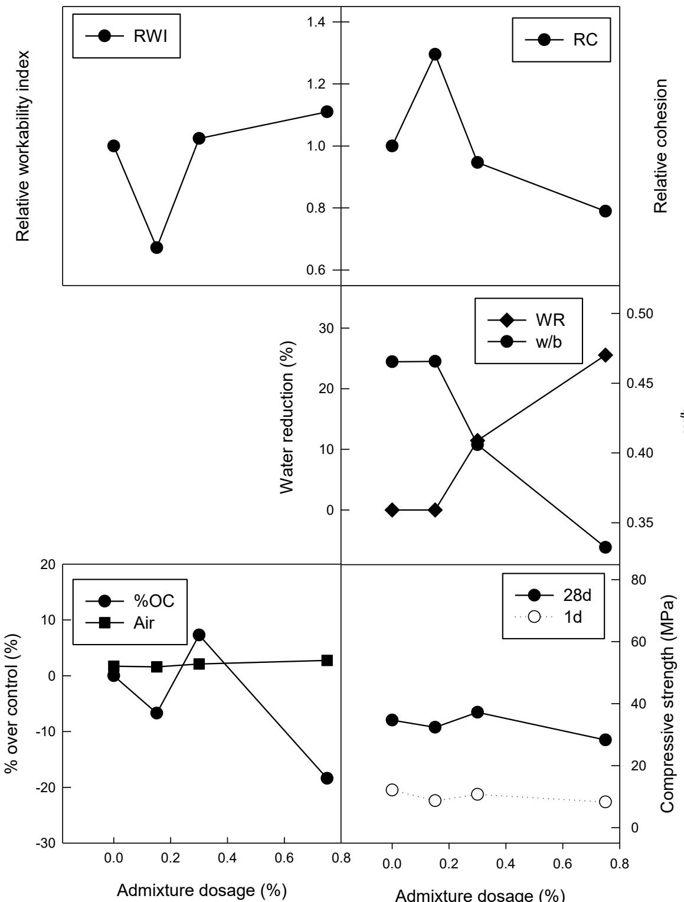
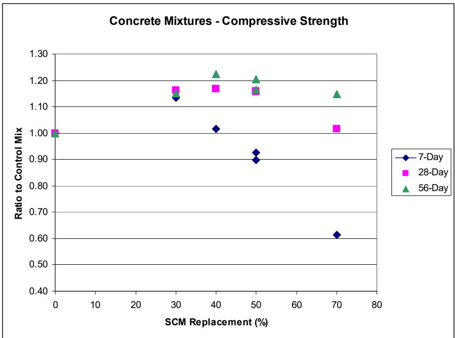
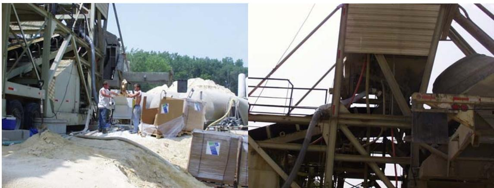
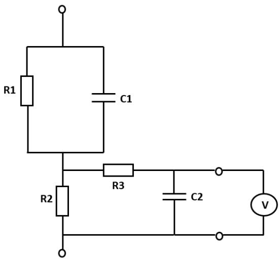
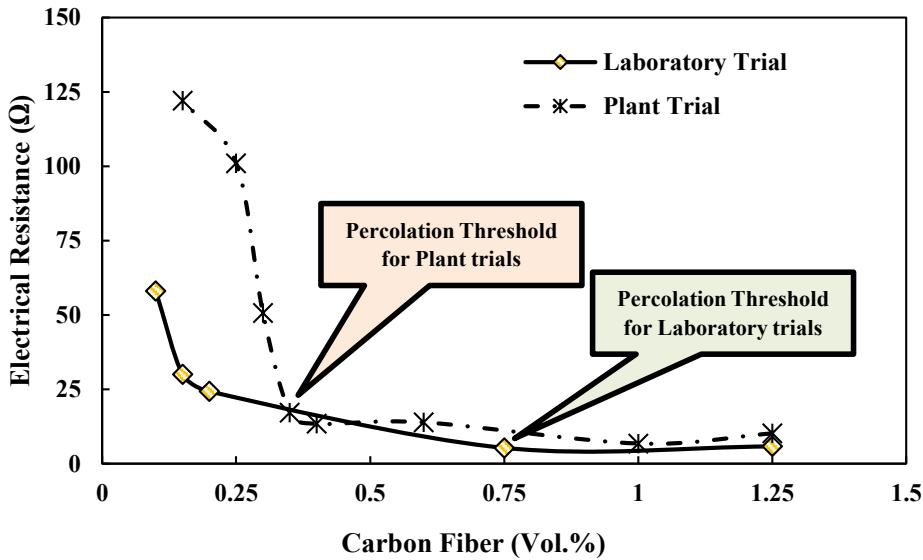
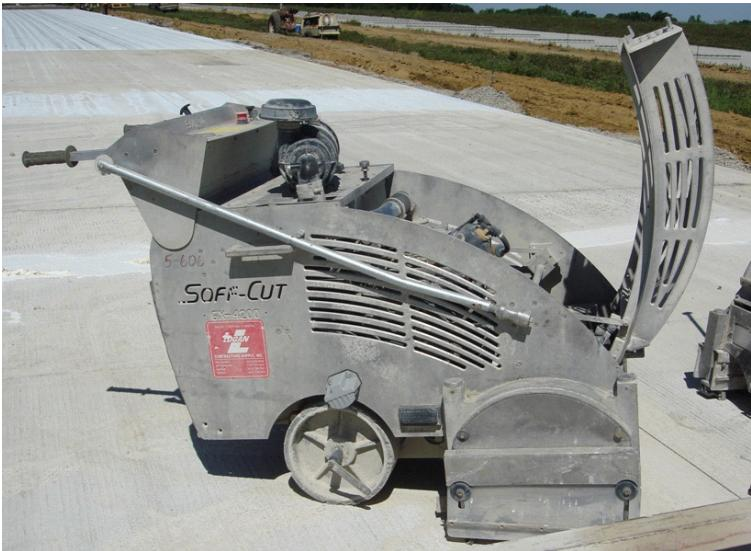

Mix Design & Specialty Mixtures
Mix design is the systematic process of selecting and proportioning cementitious binders, aggregates, water, admixtures, and supplementary materials to achieve targeted fresh-state workability and hardened-state performance attributes such as strength, durability, and resistance to environmental degradation [1] [2] [3] [4] [5] [6] [7]. Specialty mixtures extend this approach by incorporating functional additives or multiple supplementary cementitious materials to tailor the chemical and physical properties of the concrete for specific engineering challenges [1] [2] [4] [8]. The fundamental mechanism relies on controlling key parameters such as the water-to-cementitious material ratio and aggregate grading to govern pore structure, while using admixtures and supplementary materials to modify rheology, setting time, and hydration kinetics [3] [9] [6] [10] [8] [11]. Achieving a homogeneous mixture requires precise control over mixing equipment selection and sequencing to ensure uniform particle distribution and optimal interfacial transition zone development [3] [12]. Designers must balance inherent trade-offs between early-age workability, long-term durability, mechanical strength, and sustainability objectives to produce a mixture that meets both construction requirements and service-life expectations [1] [3] [12] [5] [10] [8] [13].
This overview of Mix Design & Specialty Mixtures from CP Tech Center reports also covers the following subtopics: Combined Aggregate Gradation, Econocrete, High-Performance Concrete, Performance-Based Mix Design, Performance-Engineered Mixtures, Quality Management-Concrete, Roller-Compacted Concrete, Semi-Flowable Self-Consolidating Concrete, and Ternary Mixture.
Mix Design & Specialty Mixtures unifies diverse approaches that tailor concrete composition for specific structural, economic, or performance goals. Combined Aggregate Gradation optimizes concrete mix design by engineering a continuous particle-size distribution that maximizes packing density and minimizes voids. High-Performance Concrete achieves superior mechanical strength and durability through optimized aggregate gradation and the strategic use of supplementary cementitious materials. Ternary Mixture optimizes concrete performance and durability by integrating ordinary Portland cement with two distinct supplementary cementitious materials to achieve targeted engineering outcomes. Performance-Based Mix Design optimizes concrete formulations by prioritizing field-relevant durability and strength outcomes over prescriptive ingredient ratios. Performance-Engineered Mixtures optimize concrete durability and field-relevant properties by tailoring cementitious blends with supplementary materials rather than adhering to prescriptive ingredient ratios. Semi-Flowable Self-Consolidating Concrete exemplifies advanced mix design by balancing self-consolidating fluidity with the rapid early-age strength required for slip-form paving. Roller-Compacted Concrete achieves high density and structural integrity through vibratory compaction of a stiff, low-water mixture, representing a specialized mix design strategy that prioritizes rapid placement and minimal water content for mass concrete applications. Econocrete optimizes pavement economics by using a lower-strength formulation for the bottom lift of two-lift structures. Quality Management-Concrete ensures uniform composition and reliable pavement performance by systematically controlling raw material selection, proportioning, mixing procedures, and construction practices.
Sources (35)
Sub-concepts (9)
Fundamentals
Concrete durability in freezing environments relies on managing the internal pore structure and water saturation levels, as freeze-thaw damage is driven by hydraulic and osmotic pressures generated when freezable water expands within capillary pores [14]. To mitigate this expansion, mix designs often incorporate an air-void system of microscopic bubbles that provide dedicated pathways for ice growth, thereby reducing internal stresses and preserving the material’s integrity over time [15]. Alternatively, refining the pore structure through low water-to-binder ratios or supplementary cementitious materials can restrict freezable water content sufficiently to eliminate the need for intentional air entrainment in certain conditions [14].
The following figure illustrates the freeze-thaw performance of concrete mixes across various regional conditions.
 Freeze-Thaw Results for GA, OH, OK, IN, LA, MN, NY, and SD [15]
Freeze-Thaw Results for GA, OH, OK, IN, LA, MN, NY, and SD [15]
The figure plots the relative dynamic modulus of elasticity against freeze-thaw cycles for concrete samples from eight different states.
Key findings
- Supplementary cementitious materials (SCMs) consistently improved workability, durability, and long-term strength while reducing peak heat of hydration, though they lengthened setting times and slowed early-age strength gain [1] [16] [8].
- Internal curing using lightweight fine aggregate or superabsorbent polymers reduced early-age shrinkage and thermal cracking risk, though it introduced a modest reduction in compressive strength [17] [18] [13].
- Construction-related issues, such as re-tempering and poor joint drainage, played a larger role in observed scaling and distress than the specific amount of slag or other SCMs in the mixture [15] [4] [19].
- Performance-based mix design enabled significant cement reduction and lower carbon intensity while meeting strength and durability targets, though it required careful management of rheological trade-offs [5] [8] [20].
- Isothermal calorimetry reliably predicted early-age thermal behavior, set times, and cracking risk, providing a cross-cutting tool for mix-design verification across specialty systems [16] [9].
- Air-entrainment was the most reliable strategy for freeze-thaw durability, whereas non-air-entrained mixes required ultra-low water-to-binder ratios and high strength to achieve comparable performance [14].
- High-strength mixes with low water-to-cement ratios generated greater curling and warping than blends with reduced cementitious content or performance-based proportions [21].
- Pervious concrete design involved a triadic trade-off among void content, mechanical strength, and hydraulic permeability, with air entrainment improving density and freeze-thaw durability [22].
Performance-Based Design Frameworks and Trade-Offs
Evidence: 25 reports (19 primary)
Performance-based mix design is a systematic methodology that selects and proportionates concrete constituents to achieve specified performance outcomes, such as strength, durability, workability, and surface characteristics, rather than relying solely on traditional volumetric ratios or prescriptive limits [1] [2] [3] [4] [5]. The fundamental mechanism governing these properties involves the interplay between the water-to-cementitious material ratio, which controls pore structure and mechanical strength, and the aggregate skeleton, which provides shear resistance and shape stability [9] [5] [6] [11] [7]. Designers manage inherent trade-offs by balancing fresh-state rheological requirements against hardened-state durability and early-age strength development through the strategic use of supplementary cementitious materials and chemical admixtures [1] [16] [10] [8]. This approach requires evaluating competing objectives such as minimizing heat of hydration and shrinkage risk while maintaining sufficient workability for placement and ensuring long-term resistance to environmental attacks [23] [22] [8] [11].
The following figure illustrates how these design principles manifest in practice by comparing the relative properties of P-20 admixed concrete mixtures.

Relative properties of P-20 admixed concrete mixtures [10]The figure displays six line charts plotting various fresh and hardened state parameters against increasing admixture dosage.
Research problem — Current prescriptive specifications fail to capture the complex interactions and variable behavior of modern supplementary cementitious materials, leaving engineers without reliable guidance for proportioning specialty blends such as ternary mixtures [23] [16] [8] [24]. The industry lacks a comprehensive performance-based framework that can quantify the inherent variability and incompatibilities of diverse constituents to predict critical fresh-state properties like workability and air-void quality [2] [3] [12] [22]. Designers face significant challenges in balancing competing performance objectives, such as reconciling rapid early-age strength requirements with thermal stability and shrinkage control to prevent premature distress [1] [5] [24] [25]. There is a critical shortage of rapid, quantitative tools for verifying mix uniformity and hydration kinetics in the field, which hinders the accurate implementation of performance-based specifications [9] [26].
The following figure illustrates how curing temperature influences the heat of hydration in Type I cement.
 Effect of curing temperature on heat of hydration (Type I cement) [9]
Effect of curing temperature on heat of hydration (Type I cement) [9]
The data demonstrates that “cement hydration is accelerated at early ages under high environmental temperatures but is decelerated later on” as the main peak shifts to an earlier time and increases in magnitude with higher curing temperatures.
State of the art — The field has largely migrated from prescriptive, empirically based volumetric recipes to an integrated, performance-based framework that links material selection with predictive modeling and real-time quality control [2] [15] [24]. Designers now rely on measurable outcomes such as spacing factors, cracking potential thresholds, and surface resistivity to validate ternary blends of supplementary cementitious materials, balancing early-age strength development against long-term durability and thermal-cracking risks [1] [15] [8] [24]. Current practice employs advanced diagnostic tools like semi-adiabatic calorimetry and rapid air-void analyzers to monitor hydration kinetics and void structure in real time, enabling data-driven adjustments that mitigate trade-offs between workability, durability, and environmental impact [9] [14] [24] [7].
The following figure illustrates the adiabatic calorimetry test equipment used to monitor the heat of hydration in concrete.
 Adiacal calorimetry test equipment for heat of hydration of concrete [24]
Adiacal calorimetry test equipment for heat of hydration of concrete [24]
The image displays a portable testing apparatus consisting of an open carrying case containing four cylindrical sample holders, a closed unit labeled “GRACE”, and a laptop displaying a temperature-time graph.
Findings from the reports
- Mixing protocol emerged as the dominant lever for performance across specialty mixtures, where multi-step or high-shear premixing improved uniformity and early-age strength but reduced air-entrainment efficiency, necessitating optimized mixing times to balance rheological benefits with freeze-thaw durability [3] [12].
- Supplementary cementitious materials (SCMs) fundamentally reshape mix-design parameters by lowering water demand and heat of hydration while extending setting times, creating a trade-off between long-term durability benefits and delayed early-age strength gain that is highly sensitive to curing temperature [1].
- Conventional mix designs frequently failed to balance workability, durability, and freeze-thaw resistance in field applications, with pervasive alkali-silica reactivity and degraded air-void systems indicating a systemic need for performance-based specifications and supplemental interventions like SCMs [27].
- Isothermal calorimetry provided a reliable, rapid screening tool to predict heat evolution, set times, and early-age strength of specialty mixes, enabling engineers to bridge mix-design decisions with durability performance models such as HIPERPAV [9].
- Performance-based proportioning for semi-flowable self-consolidating concrete enabled significant cementitious load reductions without compromising slip-form placement criteria, though it introduced higher drying shrinkage that required specific admixture strategies to mitigate [5].
- Statistical analysis of large-scale pavement data revealed a downward trend in early-age strength attributed to increased SCM usage, prompting recommendations to base pavement design on 56-day strengths rather than traditional 28-day values [6].
- Achieving freeze-thaw durability required either engineering a robust air-void system with adequate spacing factors or compensating for its absence through ultra-low water-to-binder ratios and exceptionally high compressive strengths, highlighting the trade-off between mix complexity and performance [14].
- Pervious-concrete mix design was dominated by a triadic trade-off among void content, mechanical strength, and hydraulic permeability, with higher porosity designs retaining better long-term infiltration capacity despite initial clogging risks [22].
- High-strength specialty mixes consistently generated greater slab curling and warping compared to lower-cement-content blends, indicating that durability optimizations may inadvertently increase susceptibility to temperature-shrinkage induced deformation [21].
- State agencies successfully transitioned toward performance-engineered mix designs that reduced cement consumption and carbon footprints, though persistent gaps in fresh-concrete workability testing and air-void quality control threatened long-term freeze-thaw durability [20].
- Very early-strength latex-modified concrete enabled rapid traffic reopening but generated high heat of hydration that drove thermal cracking and compromised freeze-thaw resistance unless paired with a high-performance substrate and rigorous temperature management [25].
- Admixture selection in roller-compacted concrete required specialized calibration distinct from conventional concrete, as water reducers and air-entraining agents significantly influenced cohesion, compactibility, and finishability in low-water mixes [10].
- Long-term exposure to deicing solutions caused secondary ettringite formation that filled fine entrained air voids, effectively destroying the protective air-void system and leading to premature joint deterioration even in mixes that initially met specification limits [19].
Novelty & rigor — The field is shifting from static, prescriptive volumetric ratios to dynamic, reliability-oriented frameworks that integrate laboratory screening with real-time field monitoring and mechanistic-empirical modeling [2] [15] [20]. Novelty in this domain arises from the development of rapid diagnostic tools—such as mobile laboratories, real-time moisture sensors, and calorimetry—that quantify early-age thermal behavior and mix homogeneity to predict cracking risk and durability before construction [1] [3] [9] [24]. Reproducibility is ensured by standardized protocols for material characterization, specific mixing sequences, and the use of unified data platforms that link fresh-state test results directly to hardened performance metrics [2] [6] [8] [20].
Reported values
| Parameter | Value | Context | Source |
|---|---|---|---|
| curing temperature | 50°F | cold weather curing condition | [1] |
| fly ash replacement | 15% | addition to cementitious material in laboratory study | [3] |
| air void content | 9.0% | Air Void Content | [27] |
| compressive strength (cold weather maturity target) | 3,500 psi | ternary mixtures in cold weather concrete operations at three days | [16] |
| mixing time | 30 seconds | two-stage mixing (optimal) | [12] |
| air content range ahead of paver (first demonstration) | 4.5% to 6.1% | Air content tested ahead of the paver during the demonstration | [15] |
| peak value variation | 5% | isothermal calorimeter test results from mean | [9] |
| rapid chloride permeability (charge passed) | 1,580 coulombs passed | Rapid chloride permeability tests | [4] |
| cement content reduction | 24% | use of slag and addition of coarse aggregates | [5] |
| 28‑day compressive strength (historical mean) | 4,700 psi | Iowa concrete (pre‑2000) | [6] |
| entrained air content | 11% | synthetic-detergent air-entraining agents (AEA) | [10] |
| air content | 6% or greater% | freeze-thaw durability (measured with ASTM C231) | [14] |
| binder-to-aggregate ratio | 24% | selected for highest strength and workability | [22] |
| air content | at least 4% | all 28 mixtures | [8] |
| paste volume to aggregate void space ratio (Vp/Vvoid) | 125 percent% | mixtures containing supplementary cementitious materials (SCMs) [specifically slag or fly ash implied by contrast] | [11] |
139 more distinct values omitted here; the full span-verified set is in the quantities sidecar.
The following figure illustrates the relationship between durability and permeability for these mixtures.
 Durability factor as a function of rapid chloride ion permeability [14]
Durability factor as a function of rapid chloride ion permeability [14]
The figure plots the Durability Factor (DF, %) against Charge Passed (k, Coulomb) to evaluate the freeze-thaw resistance of concrete mixtures. It distinguishes between mixtures with air-entraining agents (AEA), which maintain high durability factors regardless of permeability, and those without AEA, where durability decreases sharply as charge passed increases. This illustrates the performance-based mix design principle that air entrainment is a critical parameter for ensuring freeze-thaw durability in concrete exposed to environmental degradation.
Across the reviewed reports, performance-based mix design frameworks consistently reveal that incorporating supplementary cementitious materials (SCMs) creates a fundamental trade-off between enhanced long-term durability and reduced early-age strength, necessitating adjustments to curing protocols and traffic-opening criteria. While SCMs like slag and fly ash improve workability and reduce heat of hydration, they significantly extend setting times and lower early compressive strengths at cool temperatures, requiring maturity-based models to accurately predict strength development for safe traffic opening. The field evidence indicates that durability outcomes are highly sensitive to the specific combination of binders and admixtures, with ternary blends offering superior alkali-silica reaction resistance but introducing complex interactions that can lead to premature stiffening or inconsistent air-void systems if not carefully controlled. Optimization of specialty mixtures often involves balancing competing fresh-state properties, such as the need for high shear mixing to improve uniformity and early strength against the resulting reduction in air-entrainment efficiency and increased drying shrinkage. Current industry practice is shifting toward performance-based specifications that prioritize real-time monitoring of key properties like air-void spacing and early-age strength, moving away from prescriptive limits to address the variability inherent in specialty concrete systems. [1] [3] [16] [12] [15] [5] [6] [8] [20]
The following figure illustrates how varying the percentage of supplementary cementitious materials impacts relative cylinder strength across different curing durations.

Relative strength of concrete cylinders versus %SCM for various curing times [3]The figure plots the ratio of compressive strength to a control mix against the percentage of supplementary cementitious material (SCM) replacement.
Implications — Designers must transition from prescriptive volumetric ratios to performance-based frameworks that explicitly quantify the trade-offs between durability, early-age strength, and workability when incorporating supplementary cementitious materials [1] [23] [16] [6] [8]. Specifications must evolve to include calibrated maturity parameters, real-time air-void monitoring, and integrated quality management protocols that treat material selection and construction practices as inseparable determinants of pavement performance [3] [27] [15] [4] [24]. Successful deployment requires balancing competing material levers—such as air entrainment versus low water-to-binder ratios and thermal management versus schedule constraints—through systematic validation and site-specific data calibration [5] [14] [19] [25].
Limitations — The widespread adoption of performance-based frameworks is hindered by significant variability in supplementary cementitious material properties and a lack of standardized specifications for construction practices [1] [23] [8] [24]. Current predictive models and laboratory test methods often exhibit high variability or insufficient precision, limiting their reliability for routine field quality control and durability assessment [3] [16] [12] [15] [9] [6] [20]. Many performance claims remain provisional because they are derived from limited datasets or controlled laboratory conditions that do not fully capture the complexities of field construction and environmental exposure [23] [28] [27] [16] [12] [4] [6] [10] [22] [11] [21] [20].
Shrinkage Control and Internal Curing Strategies
Evidence: 5 reports (5 primary)
Shrinkage control in cementitious systems is achieved through internal curing, a strategy that introduces distributed water reservoirs within the paste to supply moisture for continued hydration without increasing the external water-to-binder ratio [17] [29] [18] [30] [13]. This internal moisture supply mitigates autogenous and plastic shrinkage by maintaining high internal relative humidity during early-age setting, thereby reducing capillary stresses that lead to cracking [18] [30] [13]. Common implementation methods involve substituting conventional fine aggregate with pre-saturated lightweight aggregates or incorporating superabsorbent polymers that release stored water as the cement matrix hydrates [17] [29] [18] [13]. Effective application requires balancing additive dosage and properties to ensure adequate crack control and durability while preserving the mix’s fresh-state workability and hardened mechanical integrity [13].
The impact of this strategy on volume stability is illustrated by comparing drying shrinkage and autogenous deformation over time.
 Comparison of shrinkage components in conventional and high-performance concrete after internal curing. [13]
Comparison of shrinkage components in conventional and high-performance concrete after internal curing. [13]
The figure plots total shrinkage against concrete age, distinguishing between autogenous shrinkage (blue) and drying shrinkage (orange). In the right panel representing high-performance concrete, a gray area indicates additional shrinkage occurring after the start of drying. The figure illustrates how internal curing strategies affect autogenous and drying shrinkage in conventional versus high-performance concrete mixtures.
Research problem — Low water-to-cementitious ratios in high-performance concrete leave insufficient internal moisture to complete hydration, triggering autogenous shrinkage and early-age cracking that compromise durability [17] [30] [13]. Current internal curing agents, such as lightweight aggregates and superabsorbent polymers, introduce variability in water release and cost that makes it difficult to guarantee consistent shrinkage mitigation without altering mix proportions [13]. Practitioners lack standardized procedures for integrating internal curing agents while maintaining precise control over moisture content, workability, and water-to-cement ratios to ensure long-term performance [18].
State of the art — Internal curing is now a recognized specialty mixture strategy that primarily uses pre-saturated lightweight fine aggregate or superabsorbent polymers to supply internal water reservoirs, thereby mitigating autogenous and plastic shrinkage in low water-to-cement ratio blends [17] [29] [18] [30] [13]. Design practice is governed by strict volumetric constraints, such as maximum water-to-cement ratios and paste volume limits, which are codified in standards like ASTM C1761 and AASHTO specifications to ensure durability without compromising structural performance [18]. While lightweight fine aggregate remains the dominant method requiring rigorous moisture management, superabsorbent polymers are emerging as a versatile alternative that offers shrinkage reduction but requires careful dosage balancing to manage potential trade-offs in compressive strength and permeability [18] [13].
The figure below illustrates the conceptual differences in volumetric components between a plain mixture and one incorporating internal curing.
 Conceptual illustration of volumetric components in a plain and internally cured mixture [18]
Conceptual illustration of volumetric components in a plain and internally cured mixture [18]
The figure displays two stacked bar charts comparing the volumetric composition of conventional concrete against an internally cured mixture. Visually, the internal curing design incorporates a distinct top layer representing lightweight aggregate (LWA) and exhibits a slightly reduced volume for coarse aggregates compared to the conventional mix.
Findings from the reports
- Substituting lightweight fine aggregate for internal curing produced concrete with comparable compressive strength to conventional mixes while significantly reducing chloride permeability, increasing surface resistivity, and extending projected service life by approximately 20 years [17].
- High-performance concrete incorporating lightweight fine aggregates for internal curing achieved compressive strength well above design requirements and reduced beam weight by roughly five percent, while maintaining satisfactory joint performance under live-load testing over three years [29].
- Internally cured concrete designed with pre-wetted lightweight fine aggregate delivered workability and strength comparable to ordinary mixes but exhibited markedly lower autogenous, plastic, and drying shrinkage, reduced internal stress, and enhanced durability [18].
- Internally cured concrete with lightweight fine aggregate yielded a lighter mix with a lower coefficient of thermal expansion and reduced modulus of elasticity, allowing designers to reduce slab thickness without sacrificing performance and achieving net present value savings [30].
- Internal curing emerged as a strategy that boosts early-age hydration, lowers shrinkage and thermal expansion, and raises strength enough to permit thinner slabs or wider joint spacing without sacrificing long-term distress performance [30].
- Incorporating superabsorbent polymers as internal-curing agents enhanced cement hydration and markedly reduced early-age shrinkage, though it introduced a modest loss in compressive strength and electrical resistivity that remained within acceptable limits [13].
- The addition of superabsorbent polymers affected workability based on moisture condition, with pre-wetting raising slump while dry addition diminished workability and delayed setting, requiring careful water budgeting and admixture compensation [13].
Novelty & rigor — The research introduces a systematic, performance-based framework that converts conventional mix designs into internally cured systems by replacing fine aggregate with pre-wetted lightweight aggregates or superabsorbent polymers, thereby decoupling curing water from the effective water-to-cement ratio [18] [13]. Methodological rigor is established through standardized pre-conditioning protocols for lightweight aggregates and quantitative dosage calculations based on cement chemical shrinkage kinetics, ensuring reproducible hydration enhancement across diverse mixture families [18] [13]. The novelty extends to a comprehensive lifecycle-cost analysis that quantifies the economic trade-offs between higher initial material costs and long-term durability benefits, providing a data-driven basis for adopting internal curing as a viable specialty mix option [17] [30].
Reported values
| Parameter | Value | Context | Source |
|---|---|---|---|
| fine aggregate replacement percentage | 20% | lightweight fine aggregate (LWFA) for internal curing | [17] |
| LWFA replacement percentage | 20% | IC mix | [17] |
| LWFA replacement percentage | 30% | IC mix | [17] |
| beam weight reduction | 5% | beams with lightweight fine aggregates for internal curing vs. conventional concrete | [29] |
| compressive strength | 6,870 psi | 28-day average concrete (with lightweight fine aggregates for internal curing) | [29] |
| compressive strength requirement | 4,000 psi | required design strength | [29] |
| drain duration | 12 to 15 hours | stockpiles | [18] |
| maximum paste volume | 26.5% | concrete design volume limit for internally cured concrete | [18] |
| maximum water-cementitious ratio | 0.42 | internally cured concrete design limits (excluding absorbed water in LWA or SAP) | [18] |
| initial construction cost increase | 3.2% | IC pavements in Iowa vs CC pavements with the same thickness | [30] |
| initial construction cost reduction | 3.1% | by decreasing the thickness of the pavement when utilizing IC concrete | [30] |
| pavement thickness | 8 and 10 in. | IC concrete pavement design options | [30] |
| compressive strength reduction | 8% | at 28 and 56 days compared to control mixture | [13] |
| SAP dosage | 0.18% | cement mass (required for internal curing water) | [13] |
| SAP dosage | 1.5 g | per 864 g of cement | [13] |
6 more distinct values omitted here; the full span-verified set is in the quantities sidecar.
Across the reviewed reports, lightweight fine aggregates (LWFA) and superabsorbent polymers (SAPs) serve as effective internal curing agents that significantly reduce autogenous, plastic, and drying shrinkage while maintaining or enhancing compressive strength and durability metrics. While LWFA-based mixes generally preserve mechanical properties such as compressive strength and modulus of elasticity with only minor reductions in unit weight and stiffness, SAP-enhanced blends introduce a modest but measurable decrease in early-age strength and electrical resistivity that must be balanced against their superior hydration acceleration. The implementation of these strategies yields long-term economic benefits through extended service life and reduced maintenance needs, although SAP dosages require careful optimization to mitigate workability losses and strength penalties compared to the more straightforward proportioning adjustments needed for LWFA. [17] [29] [18] [30] [13]
Implications — Designers should treat internal curing as a practical strategy to extend service life by reducing shrinkage and cracking, balancing the modest increase in upfront material costs against long-term lifecycle savings derived from reduced maintenance [17] [30]. Mix design practice must evolve to explicitly account for water stored in internal curing agents by adjusting proportioning calculations and incorporating specific quality control measures, such as moisture testing of lightweight aggregates [18]. Specifiers should evaluate the trade-offs between different internal curing materials, recognizing that while some agents enhance durability and allow for thinner sections, others may reduce compressive strength or increase permeability if not carefully optimized [30] [13]. Implementation of specialty mixtures with internal curing requires coordination between material selection and construction logistics to ensure that weight changes do not hinder handling equipment capabilities during rapid deployment [29].
Limitations — The practical application of internal curing is constrained by the lack of standardized guidance for batching, sequencing, and dosing procedures, which creates significant reproducibility concerns across different projects [13]. Incorporating superabsorbent polymers introduces measurable trade-offs, including compromised strength and durability metrics, delayed setting times, and increased porosity that can elevate permeability [13]. The technique serves only as a supplement to conventional curing practices rather than a replacement, meaning agencies must still adhere to standard mixing and testing protocols while further research determines the extent of allowable reductions in external wet-curing time [18].
Specialty Structural Applications: Fibers and Overlays
Evidence: 2 reports (2 primary)
Research problem — Developing a construction specification for thin, unbonded concrete overlays that balances the interacting trade-offs of slab thickness, fiber reinforcement, joint spacing, and surface preparation to achieve long-term stability and durability [31]. Determining how specific design variables influence the structural behavior and interlayer bond of these overlays to ensure cost-effective performance relative to conventional asphalt solutions for aging composite pavements [28].
State of the art — The field has shifted toward a performance-oriented framework for thin, unbonded concrete overlays that treats slab thickness, joint spacing, surface preparation, and fiber reinforcement as interdependent variables to optimize durability and stability [28]. Current practice routinely utilizes polypropylene monofilament, fibrillated, or proprietary structural fibers to control cracking and enhance bond strength in these specialty applications [28].
The practical application of these fiber reinforcement strategies is illustrated in the following figure.

Fibers being blown into the concrete mixing drum [28]The image displays a large industrial aggregate batching plant with workers standing near the base of the structure. A hopper system is shown actively blowing synthetic fibers into the concrete mixing drum to reinforce the mixture.
Findings from the reports
- Showed that longitudinal joint-forming knives eliminated the need for conventional saw cutting, providing a direct construction efficiency gain in unbonded composite overlay projects [31] [28].
- Demonstrated that synthetic fiber reinforcement provided a critical safety margin against slab loss and multiple cracking in thin overlays (≤4 inches), while having no significant impact on faulting or load transfer in thicker sections [28].
- Revealed that base preparation method was the most influential factor affecting bond performance, with scarified or cleaned-and-patched bases retaining higher shear values than those using asphaltic stress-relief layers [28].
- Observed that initial handling difficulties with synthetic fibers could be resolved through operational adjustments, resulting in uniform distribution and the disappearance of surface irregularities after traffic exposure [31].
- Confirmed that concrete-asphalt bond strengths remained within acceptable limits for unbonded overlays despite a gradual decline over time, validating the adequacy of the mix design for composite action [28].
Novelty & rigor — The research introduces a large-scale field experiment that systematically evaluates multiple mix-design variables, including fiber type and surface preparation, within thin unbonded concrete overlays to provide an unprecedented comparative dataset for specialty structural applications [31] [28]. This approach uniquely integrates real-time strength monitoring with innovative construction techniques, such as slip-form joint forming, to create a holistic performance-based strategy that balances durability and constructability in ways not captured by individual sub-concepts [28]. Reproducibility requires strict adherence to specific material dosages, precise temperature management during placement, and the use of documented instrumentation for strength assessment alongside standardized performance testing protocols [31] [28].
Reported values
| Parameter | Value | Context | Source |
|---|---|---|---|
| deflection reduction | 60% | widening units added to pavement cross section | [31] |
| fibrillated polypropylene fiber dosage | 3 lb/yd³ | synthetic fiber reinforcement in QMC mixes | [31] |
| joint sawing eliminated | 17.5 mi | longitudinal joint forming knives application | [31] |
| monofilament fiber dosage | 1 lb/yd³ | synthetic fiber reinforcement in QMC mixes | [31] |
| structural fiber dosage | 3 lb/yd³ | synthetic fiber reinforcement in QMC mixes | [31] |
| overlay depth | 3.5 in. | minimum thickness for unbonded composite overlays without fiber inclusion | [28] |
| overlay depth | 4 in. | maximum thickness where fiber inclusion provides insurance against slab loss-of-support and multiple cracking | [28] |
| overlay depth threshold | 3.5 in. | minimum depth for fiber-free construction | [28] |
| overlay depth threshold | 4 in. | maximum depth requiring fiber reinforcement | [28] |
Across the reviewed reports, synthetic fiber reinforcement in unbonded composite overlays provides limited performance gains for standard thicknesses but serves as a critical insurance mechanism against slab loss and multiple cracking in thinner sections. While the inclusion of fibers initially presented handling challenges that required operational adjustments, field evaluations confirmed that they did not significantly alter faulting or load transfer metrics compared to non-fibered counterparts. Base preparation emerged as the dominant factor influencing bond durability and performance consistency, with scarified surfaces yielding superior shear capacity and lower variability compared to those utilizing stress-relief layers. [31] [28]
Implications — Designers should prioritize controllable construction variables, such as adequate surface scarification and joint tying, over the inclusion of specialty ingredients like fibers for typical overlay thicknesses [28]. Fiber reinforcement can be omitted in overlays exceeding three and a half inches, reserving its use only for thinner sections to mitigate slab loss risks [28].
Advanced Functional Mixtures: Electrical Conductivity
Evidence: 1 report (1 primary)
Electrically conductive concrete is a specialty cementitious mixture that incorporates conductive additives, such as carbon or steel fibers, to enable the conversion of electrical energy into heat through ohmic heating [32]. Achieving sufficient conductivity requires reaching a percolation threshold where the additive content forms a continuous network, beyond which additional material yields diminishing returns in resistance reduction [32]. The design of these systems must also account for safety constraints regarding surface voltage and leakage current to ensure the pavement does not become an exposed electrical hazard [32].
Research problem — Engineers face the challenge of formulating concrete blends that simultaneously achieve precise electrical resistance for reliable heating and meet structural integrity requirements [32]. The mix design must account for inevitable cracking, which can create conductive pathways that elevate surface voltages to hazardous levels during wet conditions [32]. There is a need to ensure that fresh-stage electrical properties reliably predict long-term performance to maintain safe operating voltages and prevent electric shock incidents [32].
The following figure illustrates how laboratory trial samples perform electrically to address these mix design challenges.
 Laboratory trial samples’ electrical performance [32]
Laboratory trial samples’ electrical performance [32]
The figure displays a horizontal bar chart comparing the electrical resistance of concrete mixtures at two distinct time points: the fresh stage and after 28 days. The data demonstrates an inverse relationship between carbon fiber dosage and electrical resistance, with lower dosages resulting in significantly higher resistance values at both stages.
State of the art — Design guidelines now also integrate electrical safety standards—capping surface voltage at 30 VAC for dry contact or 15 VAC for wet conditions per NEC/UL practice—and require ungrounded systems with leakage currents below the prescribed limits, ensuring that the conductive pavement can be safely deployed in winter maintenance applications [32].
The following figure illustrates the leakage current measuring circuit used for AC at frequencies up to 100 Hz.

Leakage current measuring circuit for AC at frequencies up to 100 Hz [32]This apparatus is utilized to ensure that the surface voltage of ECON surfaces remains below 30 VAC for dry contact, a safety standard established by NEC and UL.
Findings from the reports
- Demonstrated that electrically conductive concrete requires a precisely tuned mix design with short carbon fibers added in two stages at the job site to achieve optimal distribution and lowest electrical resistance [32].
- Revealed that limiting batch volume to approximately 6 yd³ reduced fiber balling and ensured uniform distribution of conductive additives [32].
Novelty & rigor — This work introduces the first end-to-end mix-design and production protocol for electrically heated concrete, bridging the gap between laboratory-scale conductive mixes and field-ready specialty applications [32]. The approach is distinct in its requirement for a two-stage fiber addition at the job site and strict truckload volume limits to ensure uniform dispersion and prevent clumping, addressing logistical challenges not captured by conventional prescriptive methods [32]. Reproducibility is supported by a statistically validated model that links fresh-stage electrical resistance measurements to target 28-day values, providing contractors with a real-time quality-control tool for safe low-voltage operation [32].
The following figure illustrates the electrical performance of ready-mixed concrete plant trial samples.
 Electrical resistance measurements for ready mixed concrete plant trials at fresh and 28-day stages. [32]
Electrical resistance measurements for ready mixed concrete plant trials at fresh and 28-day stages. [32]
The figure displays a bar chart comparing the electrical resistance of various concrete mixtures containing carbon fibers, categorized by specific volume percentages and plant trial identifiers. For each trial, two bars represent the ‘Fresh Stage’ and ‘28-day’ measurements, showing that electrical resistance generally increases significantly as the carbon fiber dosage decreases below 0.75 Vol.%.
Reported values
| Parameter | Value | Context | Source |
|---|---|---|---|
| batch size limit | 6 yd3 | truckload of a single batch of ECON in a ready mix truck mixer | [32] |
| fiber length | 0.5 in. | carbon fibers for optimal conductivity | [32] |
| fresh-stage electrical resistance | 4 to 10 Ω | beam with copper mesh electrodes | [32] |
| maximum batch volume | 6 yd3 | single batch of ECON in a ready mix truck mixer | [32] |
Implications — Designers must treat electrical conductivity as a primary performance target rather than an incidental property, requiring the adoption of carbon-fiber dosages that exceed the percolation threshold to ensure reliable heating functionality [32]. Construction practices must be rigorously adapted through specific fiber addition protocols and transport agitation limits to preserve material integrity, while quality control relies on statistical models of fresh-stage resistance to predict final system performance [32]. The industry is shifting toward a holistic performance-engineered approach that simultaneously balances electrical conductivity with mechanical durability and strict safety constraints, moving beyond traditional strength-only mix designs [32].
The following figure illustrates the percolation threshold of carbon fiber in ECON.

Comparison of electrical resistance versus carbon fiber volume percentage for laboratory and plant trials. [32]The figure plots Electrical Resistance (Ω) against Carbon Fiber (Vol.%), comparing data from a Laboratory Trial using diamond markers and a Plant Trial using asterisk markers. Both datasets demonstrate that electrical resistance decreases as the carbon fiber volume percentage increases, eventually reaching a plateau where conductivity stabilizes.
Limitations — Laboratory-based quality control models rely on limited sample sizes at room temperature, failing to account for the performance impacts of colder service conditions [32]. The absence of dedicated safety standards forces reliance on generic electrical rules that restrict system designs to low-voltage configurations deemed safe for wet environments [32]. Field production introduces significant variability in material resistance due to mixing and transit effects, while strict dosage limits are required to prevent uneven distribution of conductive fibers [32].
High-Performance and High-Strength Concrete Systems
Evidence: 1 report (1 primary)
Findings from the reports
- Evaluated a slip-form pavement mixture that achieved high workability and coarseness factors while maintaining a low water-to-cementitious ratio through the inclusion of fly ash and specific coarse sand proportions [33].
Pavement Construction Techniques: Two-Lift and Econocrete
Evidence: 1 report (1 primary)
Research problem — Engineers lack a proven mix-design strategy that safely combines low-cost base concrete with high-performance surface mixes while ensuring reliable bond strength, durability, and compatible thermal behavior [34]. The absence of optimized specialty mixtures for two-lift construction results in significantly higher costs due to the need for multiple batch plants and complex logistics, which limits adoption despite potential environmental and performance benefits [34].
State of the art — The two-lift approach is currently the most advanced practice in concrete pavement mix design, separating a lower structural lift from an upper wear surface to tailor each layer’s properties for specific functions [34]. While European adoption routinely leverages this method for noise reduction and cost savings through functional segregation of aggregates, U.S. implementation remains limited due to higher costs associated with operating multiple batch plants and additional permitting requirements [34]. Current state-of-the-art research focuses on closing the performance-cost gap by optimizing recycled material contents in base lifts, assessing thermal-expansion compatibility between layers, and exploring roller-compacted concrete for lower lift applications [34].
The practical application of this two-lift approach is illustrated in the following figure.
 Two-lift paving in Austria (Source: http://www.walter-heilit-vwb.de/english/toechterg/wien.htm) [34]
Two-lift paving in Austria (Source: http://www.walter-heilit-vwb.de/english/toechterg/wien.htm) [34]
The image displays a fleet of yellow construction vehicles, including dump trucks and pavers, operating on a wet highway surface.
Findings from the reports
- Demonstrated that specialized two-lift mix designs using a lower-strength bottom lift and higher-strength top lift can achieve acceptable bonding and durability when specific waiting periods and air-entrainment adjustments are implemented [34].
- Revealed that the technical feasibility of distinct lifts for lower and upper pavement layers is constrained by construction costs that are approximately double those of conventional single-lift concrete pavements [34].
Reported values
| Parameter | Value | Context | Source |
|---|---|---|---|
| asphalt content in final concrete base course | 40% | recycled existing concrete pavement with asphalt overlay into a base course | [34] |
| recycled asphalt content | 15% | bottom lift | [34] |
| recycled asphalt content | 40% | bottom lift | [34] |
Implications — Agencies should prioritize the development of specialty mixes that enable high-performance surface layers using base-lift aggregates to eliminate the logistical and financial burdens of dual-plant operations [34]. Standardization efforts must quantify allowable recycled aggregate content while establishing clear guidelines for shrinkage, thermal expansion, and joint spacing to ensure durability and performance compatibility [34].
Limitations — The implementation of two-lift pavements is constrained by significantly higher material and construction costs compared to conventional single-lift methods, which limits their attractiveness in low-bid market environments [34]. Operational risks such as equipment breakdowns or logistical errors can lead to wasted concrete, while technical challenges like bonding issues between dissimilar mixes may result in longitudinal cracking [34].
Quality Assurance and Verification Technologies
Evidence: 1 report (1 primary)
State of the art — The industry is transitioning from prescriptive volumetric recipes to performance-based specifications that require on-site verification of durability-critical proportions [26]. Portable X-ray fluorescence (XRF) is emerging as a rapid, cost-effective tool for confirming the chemical makeup of fresh concrete batches and flagging deviations from pre-qualified mixes [26]. Current handheld XRF technology faces limitations in handling heterogeneous mortar samples and estimating water content, necessitating further refinement before it can be adopted as a routine quality-control method [26].
The following figure illustrates the handheld XRF device used for this on-site verification.
 Handheld XRF device [26]
Handheld XRF device [26]
The image displays a handheld X-ray fluorescence (XRF) analyzer, specifically the Niton XL3t model manufactured by Thermo Scientific.
Findings from the reports
- Portable X-ray fluorescence systems accurately identified major oxides in cementitious materials and back-calculated supplementary cementitious material dosages in paste mixes, provided water content was not forced into the balance [26].
- The portable X-ray fluorescence method consistently over-reported sulfate levels in Portland cement and failed to detect significant fractions of fine aggregate, leading to large prediction errors in mortar samples due to sample heterogeneity [26].
Novelty & rigor — The research introduces a field-deployable method for real-time mix verification by using handheld X-ray fluorescence to infer constituent proportions of fresh concrete, offering a rapid alternative to traditional batch-ticket tracking [26]. This approach enables the back-calculation of supplementary cementitious material dosages in paste blends through elemental analysis and solver algorithms, providing a novel pathway for performance-based quality control without relying on laboratory tests [26]. The methodology is reproducible using standardized specimen preparation and fixed-position XRF measurements, although reliability may be limited by sample heterogeneity in mortar applications [26].
The following figure illustrates how this analytical approach performs by showing the relationship between cumulative error and calculated SCM content.
 The relationship between cumulative error and calculated SCM content for Fly Ash, Class C Fly Ash, and Slag. [26]
The relationship between cumulative error and calculated SCM content for Fly Ash, Class C Fly Ash, and Slag. [26]
The figure plots the cumulative error against the calculated supplementary cementitious material (SCM) content to demonstrate the sensitivity of a least-differences approach used in mix verification. The data reveals that for each binder type—Fly Ash, Class C Fly Ash, and Slag—the calculation yields a clear minimum error at specific dosage levels. This quantitative analysis supports performance-based quality control by validating the correlation between portable elemental measurements and actual batch proportions in concrete mix design.
Limitations — Portable X-ray fluorescence methods face significant accuracy challenges due to sample heterogeneity, particularly in mortar mixes where substantial prediction errors occur even with corrective modeling [26]. The technique struggles to detect many elements within fine aggregates and is hindered by the practical difficulty of obtaining representative paste samples on-site, limiting its current reliability for broad performance-based mix design applications [26].
Supplementary Cementitious Materials and Ternary Blends
Evidence: 1 report (1 primary)
Research problem — Early-entry saw cuts in pavements utilizing low-shrinkage ternary cementitious blends frequently fail to induce joint cracks within the expected timeframe, creating uncertainty regarding the timing of stress relief and the potential for subsequent uncontrolled random cracking [35]. There is a need to understand how specialty mixtures interact with construction practices like sawing to inform optimal joint design and depth selection, ensuring that delayed crack formation does not compromise long-term pavement durability or necessitate premature repairs [35].
The following figure illustrates the sawing equipment used to address these joint design challenges.

Soff-Cut sawing equipment used for early-entry pavement jointing. [35]The image displays a piece of industrial machinery, specifically a Soff-Cut sawing machine, positioned on a concrete surface. This equipment is used for early entry sawing to induce joint cracks in pavements utilizing low-shrinkage ternary cementitious blends.
State of the art — Contemporary practice for specialty concrete pavements centers on low-shrinkage ternary blends of Portland cement, fly ash, and slag proportioned to a water-to-cement ratio of approximately 0.40 [35]. These mixtures are managed through performance-oriented quality control procedures and monitored using embedded vibrating-wire strain gages capable of detecting micro-strain changes as small as one µε to track joint stress development [35]. While early entry sawing within the first few hours is increasingly adopted to enhance productivity, it delays joint crack initiation to roughly twelve days compared to less than one day for conventional deeper cuts, though all joints eventually crack within twenty-five days [35].
The impact of these varying joint strategies is illustrated in the figure below.
 Joints with different sawing depths in the test sections [35]
Joints with different sawing depths in the test sections [35]
The image displays three concrete pavement slabs featuring longitudinal joints that have been cut to varying depths.
Findings from the reports
- The field study found that every instrumented joint cracked within 25 days, regardless of saw depth [35].
- Measured joint openings after cracking ranged from a few thousandths of an inch for shallow early‑entry cuts to over six hundredths of an inch for deeper conventional cuts [35].
- After cracking, the 20‑ft slabs expanded or contracted by approximately 0.025 in. due to daily temperature fluctuations [35].
- Embedded vibrating‑wire gauges reliably recorded joint deformations that matched visual observations, confirming their suitability for monitoring crack development in field conditions [35].
- The ternary cementitious blend’s reduced shrinkage contributed to the delayed crack formation observed with shallow sawing, but it did not prevent eventual cracking within a month [35].
- No random (unsawn) cracking was observed after two months of service in the studied pavement sections [35].
Novelty & rigor — The research introduces a novel field-scale methodology that utilizes embedded vibrating-wire strain gages to capture real-time deformation and precise crack initiation timing in ternary concrete blends, moving beyond standard prescriptive mix-design assumptions [35]. This approach provides unique quantitative evidence regarding the delayed cracking behavior of low-shrinkage ternary mixes under early-entry versus conventional sawing regimes, a level of mechanistic detail not typically captured by traditional performance-based methods [35]. The study demonstrates high reproducibility through the specification of exact material proportions and instrumentation protocols, allowing for direct replication of the strain monitoring and joint sawing procedures under controlled quality management conditions [35].
Reported values
| Parameter | Value | Context | Source |
|---|---|---|---|
| joint cracking time | 0.6 days | conventional sawing method, joints sawed to a depth of one-third of the pavement thickness | [35] |
| joint cracking time | 12.3 days | early entry sawing | [35] |
| joint cracking time | 2.2 days | conventional sawing method, joints sawed to a depth of one-quarter of the pavement thickness | [35] |
| joint cracking time | 25 days | all 30 joints after paving | [35] |
| joint deformation range | 0.0012–0.0410 in. | one-quarter pavement thickness sawings | [35] |
| joint deformation range | 0.0042– 0.0458 in. | one-third pavement thickness sawings | [35] |
| joint deformation range | 0.0055–0.0622 in. | early entry sawings | [35] |
| joint length change | 0.025 in. | ambient temperature effect, 20 ft long concrete slab | [35] |
| slab length change | 0.025 in. | average length change of the 20 ft long concrete slab due to ambient temperature effect | [35] |
Implications — Design guidelines for specialty blends incorporating supplementary cementitious materials must account for thermal expansion and anticipate post-crack slab movements, as these mixes remain susceptible to joint cracking despite potential reductions in shrinkage [35]. Current performance-based recommendations for ternary blends are limited by a lack of data on early-age shrinkage across varied cementitious compositions, necessitating further research before broad prescriptive standards can be established [35].
Limitations — The available evidence is constrained by its reliance on a single concrete mix design, which limits the ability to generalize findings regarding supplementary cementitious materials and ternary blends to other specialty formulations [35]. Uncertainty remains regarding how premature loading from contractor equipment influences joint-cracking timing, as the investigation did not assess shrinkage behavior prior to cracking [35].
Related concepts
In this hierarchy
- Parent: Concrete Materials & Mixtures
- Child: Combined Aggregate Gradation
- Child: Econocrete
- Child: High-Performance Concrete
- Child: Performance-Based Mix Design
- Child: Performance-Engineered Mixtures
- Child: Quality Management-Concrete
- Child: Roller-Compacted Concrete
- Child: Semi-Flowable Self-Consolidating Concrete
- Child: Ternary Mixture
Related by shared evidence
- Supplementary Cementitious Materials — shares 27 reports
- CP Tech Center Reports — shares 24 reports
- Air Entraining Agent — shares 23 reports
- Cement Hydration — shares 23 reports
- Concrete Curing — shares 22 reports
- Concrete Materials & Mixtures — shares 22 reports
- Fly Ash — shares 22 reports
- Cementitious Materials & Chemistry — shares 21 reports
Similar topics
- Performance-Based Mix Design
- Performance-Engineered Mixtures
- Concrete Materials & Mixtures
- Quality Management-Concrete
- Performance-Based Specification for Ternary Mixtures
- Supplementary Cementitious Materials
- Pervious Concrete
- High-Performance Concrete
References
- K. Wang and Z. Ge, "Evaluating Properties of Blended Cements for Concrete Pavements," Department of Civil, Construction and Environmental Engineering, Iowa State University, Ames, IA, 2003. [Online]. Available: https://www.intrans.iastate.edu/wp-content/uploads/2018/03/blended_cements-1.pdf
- D. Harrington, R. Rasmussen, D. Merritt, T. Cackler, and P. Taylor, "Long-Term Plan for Concrete Pavement Research and Technology—The Concrete Pavement Road Map (Second Generation): Volume II, Tracks (FHWA-HRT-11-070)," National Center for Concrete Pavement Technology, Iowa State University, Ames, IA, 2012. [Online]. Available: https://www.fhwa.dot.gov/publications/research/infrastructure/pavements/pccp/11070/11070.pdf
- S. Schlorholtz, K. Wang, J. Hu, and S. Zhang, "Materials and Mix Optimization Procedures for PCC Pavements," CTRE, Iowa State University, Ames, IA, Rep. TR-484, 2006. [Online]. Available: https://www.intrans.iastate.edu/wp-content/uploads/2018/03/mco-final.pdf
- S. Schlorholtz and R. D. Hooton, "Deicer Scaling Resistance ... Containing Slag Cement, Phase 1: Site Selection and Analysis of Field Cores," National Concrete Pavement Technology Center, Ames, IA, Rep. TPF-5(100), 2008. [Online]. Available: https://www.cptechcenter.org/wp-content/uploads/2018/03/schlorholtz_deicing_phase1.pdf
- K. Wang, S. P. Shah, J. Grove, P. Taylor, P. Wiegand, B. Steffes, G. Lomboy, Z. Quanji, L. Gang, and N. Tregger, "Self-Consolidating Concrete—Applications for Slip-Form Paving: Phase II," National Concrete Pavement Technology Center, Ames, IA, Rep. TPF-5(098), 2011. [Online]. Available: https://www.intrans.iastate.edu/wp-content/uploads/2018/03/SCC_Phase_2_final_report-edited_wcover.pdf
- K. Wang, J. Hu, and Z. Ge, "Task 4: Testing Iowa PCC Mixtures for the AASHTO Mechanistic-Empirical Pavement Design Procedure," Center for Transportation Research and Education, Ames, IA, Rep. CTRE 06-270, 2008. [Online]. Available: https://www.intrans.iastate.edu/research/completed/testing-iowa-portland-cement-concrete-mixtures-for-the-mechanistic-empirical-pavement-design-guide/
- X. Wang, P. Taylor, and D. King, "Evaluation of Modified Concrete Mixture Proportions for the City of West Des Moines," National Concrete Pavement Technology Center, Ames, IA, 2016. [Online]. Available: https://www.intrans.iastate.edu/wp-content/uploads/2018/03/WDM_modified_concrete_mixture_proportions_w_cvr.pdf
- P. Tikalsky, P. Taylor, S. Hanson, and P. Ghosh, "Development of Performance Properties of Ternary Mixtures: Laboratory Study on Concrete," National Concrete Pavement Technology Center, Ames, IA, Rep. TPF-5(117), 2011. [Online]. Available: https://www.intrans.iastate.edu/research/completed/development-of-performance-properties-of-ternary-mixtures-laboratory-study-on-concrete/
- K. Wang, Z. Ge, J. Grove, J. M. Ruiz, R. Rasmussen, and T. Ferragut, "Simple and Rapid Test for Monitoring the Heat Evolution of Concrete Mixtures, Phase 2," Center for Transportation Research and Education, Ames, IA, 2007. [Online]. Available: https://www.intrans.iastate.edu/wp-content/uploads/2018/03/calorimeter.pdf
- C. V. Hazaree, H. Ceylan, P. Taylor, K. Gopalakrishnan, K. Wang, and F. Bektas, "Use of Chemical Admixtures in Roller-Compacted Concrete for Pavements," National Concrete Pavement Technology Center, Ames, IA, 2013. [Online]. Available: https://www.intrans.iastate.edu/wp-content/uploads/2018/03/rcc_admixture_w_cvr1.pdf
- P. Taylor, F. Bektas, E. Yurdakul, and H. Ceylan, "Optimizing Cementitious Content in Concrete Mixtures for Required Performance," National Concrete Pavement Technology Center, Ames, IA, 2012. [Online]. Available: https://www.intrans.iastate.edu/wp-content/uploads/2018/03/taylor_ocm_w_cvr2.pdf
- T. D. Rupnow, V. R. Schaefer, K. Wang, and B. L. Hermanson, "Improving PCC Mix Consistency and Production Rate through Two-Stage Mixing," Center for Transportation Research and Education, Ames, IA, Rep. TR-505, 2007. [Online]. Available: https://www.intrans.iastate.edu/wp-content/uploads/2018/03/two-stage-mix-1.pdf
- B. Zhou, P. Taylor, and K. Wang, "Superabsorbent Polymer in Concrete to Improve Durability," National Concrete Pavement Technology Center, Iowa State University, Ames, IA, Rep. TR-793, 2025. [Online]. Available: https://www.intrans.iastate.edu/wp-content/uploads/2025/04/superabsorbent_polymer_in_concrete_w_cvr.pdf
- K. Wang, G. Lomboy, and R. Steffes, "Investigation into Freezing-Thawing Durability of Low-Permeability Concrete with and without Air Entraining Agent," National Concrete Pavement Technology Center, Ames, IA, 2009. [Online]. Available: https://www.intrans.iastate.edu/wp-content/uploads/2018/03/low-permeability-concrete.pdf
- J. Grove, G. Fick, T. Rupnow, and F. Bektas, "Material and Construction Optimization for Prevention of Premature Pavement Distress in PCC Pavements," National Concrete Pavement Technology Center, Ames, IA, Rep. TPF-5(066), 2008. [Online]. Available: https://www.intrans.iastate.edu/wp-content/uploads/2018/03/mco-final.pdf
- P. Tikalsky, V. Schaefer, K. Wang, B. Scheetz, T. Rupnow, A. St. Clair, M. Siddiqi, and S. Marquez, "Development of Performance Properties of Ternary Mixes, Phase 1," Center for Transportation Research and Education, Ames, IA, Rep. TPF-5(117), 2007. [Online]. Available: https://www.intrans.iastate.edu/research/completed/development-of-performance-properties-of-ternary-mixes-phase-1/
- P. Taylor, T. Hosteng, X. Wang, and B. Phares, "Evaluation and Testing of a Lightweight Fine Aggregate Concrete Bridge Deck in Buchanan County, Iowa," National Concrete Pavement Technology Center and Bridge Engineering Center, Ames, IA, Rep. TR-648, 2016. [Online]. Available: https://www.intrans.iastate.edu/wp-content/uploads/2018/03/Buchanan_LWFA_bridge_deck_w_cvr.pdf
- W. J. Weiss and L. Montanari, "Guide Specification for Internally Curing Concrete," National Concrete Pavement Technology Center, Ames, IA, Rep. TPF-5(286), 2017. [Online]. Available: https://www.intrans.iastate.edu/wp-content/uploads/2018/09/IC_guide_spec_w_cvr.pdf
- P. Taylor, L. Sutter, and J. Weiss, "Investigation of Deterioration of Joints in Concrete Pavements," National Concrete Pavement Technology Center, Ames, IA, Rep. TPF-5(224), 2012. [Online]. Available: https://www.intrans.iastate.edu/wp-content/uploads/2018/03/joint_deterioration_penetrating_sealers_field_study_w_cvr.pdf
- J. Gross, J. Weiss, T. Ley, P. Taylor, N. Weitzel, T. Van Dam, G. Smith, and C. Jones, "Performance-Engineered Concrete Paving Mixtures," National Concrete Pavement Technology Center, Iowa State University, Ames, IA, Rep. TPF-5(368), 2022. [Online]. Available: https://www.intrans.iastate.edu/wp-content/uploads/2023/04/performance-engineered_concrete_paving_mixtures_w_cvr.pdf
- K. Tian, D. King, B. Yang, S. Kim, A. Alhasan, and H. Ceylan, "Impact of Curling and Warping on Concrete Pavement: Phase II," Program for Sustainable Pavement Engineering and Research (PROSPER), Iowa State University, Ames, IA, Rep. TR-749, 2023. [Online]. Available: https://intrans.iastate.edu/app/uploads/2023/06/Impact_of_Curling_and_Warping_Phase_II_w_cvr.pdf
- V. R. Schaefer and J. T. Kevern, "An Integrated Study of Pervious Concrete Mixture Design for Wearing Course Applications," National Concrete Pavement Technology Center, Ames, IA, 2011. [Online]. Available: https://www.intrans.iastate.edu/wp-content/uploads/2018/03/pervious_overlay_report_w_cvr.pdf
- S. Schlorholtz, "Development of Performance Properties of Ternary Mixes: Scoping Study (Phase 1)," Center for Portland Cement Concrete Pavement Technology, Iowa State University, Ames, IA, Rep. DTFH61-01-X-00042 (Project 13), 2004. [Online]. Available: https://www.cptechcenter.org/wp-content/uploads/2018/03/ternary_mixes.pdf
- P. Taylor, P. Tikalsky, K. Wang, G. Fick, and X. Wang, "Development of Performance Properties of Ternary Mixtures: Field Demonstrations and Project Summary," National Concrete Pavement Technology Center, Ames, IA, Rep. TPF-5(117), 2012. [Online]. Available: https://www.intrans.iastate.edu/wp-content/uploads/2018/03/ternary_final_w_cvr.pdf
- K. Wang, B. M. Shankaramurthy, A. Anand, Y. Sargam, K. Freeseman, and B. Phares, "Performance Evaluation of Very Early Strength Latex-Modified Concrete (LMC-VE) Overlay," Institute for Transportation, Iowa State University, Ames, IA, Rep. TR-771, 2024. [Online]. Available: https://bec.iastate.edu/wp-content/uploads/2024/10/performance_evaluation_of_LMC-VE_overlay_w_cvr.pdf
- P. C. Taylor, E. Yurdakul, and H. Ceylan, "Concrete Pavement MDA: Application of a Portable X-Ray Fluorescence Technique to Assess Concrete Mix Proportions," National Concrete Pavement Technology Center, Ames, IA, Rep. TPF-5(205), 2012. [Online]. Available: https://www.intrans.iastate.edu/research/completed/concrete-pavement-mixture-design-and-analysis/
- J. Grove, F. Bektas, and H. Gieselman, "Southeast Michigan Local Road Concrete Pavement Durability Study," National Concrete Pavement Technology Center, Ames, IA, 2006. [Online]. Available: https://www.cptechcenter.org/wp-content/uploads/2018/03/mi_pavement_durability.pdf
- J. K. Cable, J. L. Morud, and T. R. Tabbert, "Evaluation of Composite Pavement Unbonded Overlays: Phase III," CTRE, Iowa State University, Ames, IA, Rep. TR-478, 2006. [Online]. Available: https://rosap.ntl.bts.gov/view/dot/24065
- B. Phares, T. Hosteng, L. Greimann, and A. Pakhale, "Evaluation of the Buchanan County IBRD Bridge on Victor Avenue over Prairie Creek," Bridge Engineering Center, Ames, IA, Rep. InTrans Project 12-427, 2017. [Online]. Available: https://www.intrans.iastate.edu/wp-content/uploads/2018/03/Victor_Ave_over_Prairie_Creek_IBRD_bridge_eval_w_cvr.pdf
- P. Vosoughi, S. Tritsch, H. Ceylan, and P. Taylor, "Lifecycle Cost Analysis of Internally Cured Jointed Plain Concrete Pavement," National Concrete Pavement Technology Center, Ames, IA, Rep. TR-676, 2017. [Online]. Available: https://publications.iowa.gov/27038/
- J. K. Cable, M. L. Anthony, F. S. Fanous, and B. M. Phares, "Evaluation of Composite Pavement Unbonded Overlays: Phases I and II," Center for Portland Cement Concrete Pavement Technology, Iowa State University, Ames, IA, Rep. TR-478, 2003. [Online]. Available: https://www.intrans.iastate.edu/research/completed/evaluation-of-composite-pavement-unbonded-overlays-phase-iii-tr-478-hr-1093-proj-2/
- M. L. Rahman, H. Ceylan, S. Kim, P. C. Taylor, and D. King, "Advancing Electrically Heated Pavements for Sustainable Winter Maintenance," PROSPER and National Concrete Pavement Technology Center, Iowa State University, Ames, IA, Rep. HR-3049, 2024. [Online]. Available: https://www.intrans.iastate.edu/wp-content/uploads/2025/03/electrically_heated_pavements_for_sustainable_winter_maintenance_w_cvr.pdf
- National Concrete Pavement Technology Center (CP Tech Center), "Implementation Support for SHRP2 Renewal Project R06E — Real-Time Smoothness Measurements on PCC Pavements during Construction," National Concrete Pavement Technology Center (CP Tech Center), Ames, IA, 2019. [Online]. Available: https://cptechcenter.org/research/completed/implementation-support-for-shrp2-renewal-project-r06e-real-time-smoothness-measurements-on-portland-cement-concrete-pavements-during-construction/
- J. K. Cable and D. P. Frentress, "Two-Lift Portland Cement Concrete Pavements to Meet Public Needs," Center for Transportation Research and Education, Iowa State University, Ames, IA, Rep. DTF61-01-X-00042 (Project 8), 2004. [Online]. Available: https://www.intrans.iastate.edu/wp-content/uploads/2020/10/two_lift.pdf
- K. Wang, J. Hu, F. Bektas, P. Taylor, and H. Ceylan, "Crack Development in Ternary Mix Concrete Utilizing Various Saw Depths," National Concrete Pavement Technology Center, Ames, IA, Rep. TR-587, 2009. [Online]. Available: https://publications.iowa.gov/19999/1/IADOT_tr_587_Crack_Development_Ternary_Mix_Concrete_Saw_Depths_February_2009.pdf
Feedback on this page